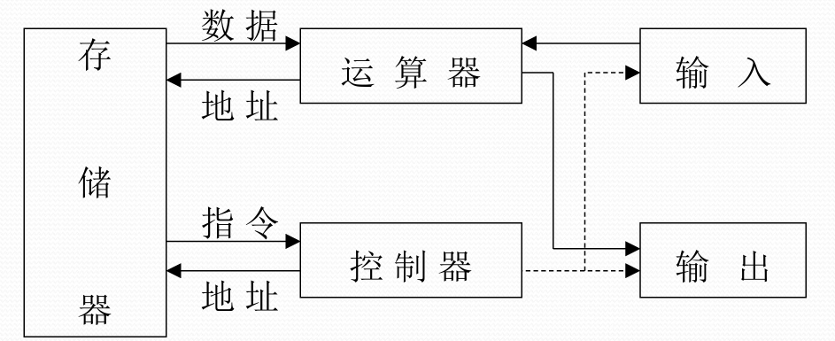
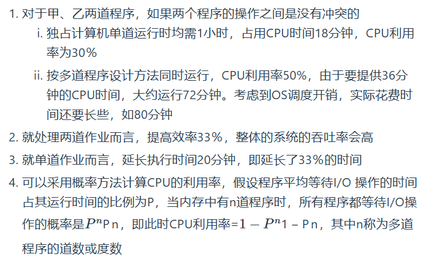

2024-06-04
NJU SE OS
\n
关键词：南京大学 软件学院 操作系统 期末复习 homework 作业 2024 22级
\n\n\n\n
第一章：计算机操作系统概述
\n\n\n\n
计算机的定义：
\n\n\n\n
电子数字计算机，是一种能够自行按照已设定的程序进行数据处理的电子设备
它是，是软件与硬件相结合、面向系统、侧重应用的自动化求解工具
\n\n\n\n
冯·诺依曼结构
\n\n\n\n

\n\n\n\n1945年6月冯·诺伊曼等发表了著名的“101页报告”，指出计算机分为运算器、逻辑控制器、存储器、输入设备和输出设备 五大部件，发展至今，大多数机器结构并未突破冯·诺依曼结构。
\n\n\n\n
操作系统中最基本的抽象
\n\n\n\n \n\n\n\n
\n\n\n\n
\n
- 进程抽象:对已进入主存正在运行的程序在处理器上操作的状态集的抽象 \n\n\n\n
- 虚存抽象:是物理内存的抽象，进程可获得一个硕大的连续地址空间来存放可执行程序和数据，可使用虚拟地址来引用物理主存单元。 \n\n\n\n
- 文件抽象:是对设备(磁盘)的抽象 \n \n\n\n\n
\n\n\n\n \n\n\n\n
\n\n\n\n
总路线：
\n\n\n\n \n\n\n\n
\n\n\n\n
多道程序设计
\n\n\n\n
指允许多个作业(程序)同时进入计算机系统的内存并启动交替计算的方法
\n\n\n\n
\n
- CPU速度与I/O速度不匹配的矛盾，非常突出 \n\n\n\n
- 只有让多道程序同时进入内存争抢CPU运行，才可以够使得CPU和外围设备充分并行，从而提高计算机系统的使用效率
\n
\n\n\n\n
 \n\n\n\n
\n\n\n\n \n\n\n\n
\n\n\n\n
\n\n\n\n
\n
- 多道程序设计的特点 \n\n
- CPU与外部设备充分并行 \n\n\n\n
- 外部设备之间充分并行 \n\n\n\n
- 发挥CPU、内存和设备的使用效率 \n\n\n\n
- 提高单位时间的算题量(吞吐率) \n\n \n \n\n\n\n\n
- 进入内存执行的程序建立管理实体：进程 动态概念，驻留在操作系统中 \n\n\n\n
- OS应该能管理与控制进程程序的执行 \n\n\n\n
- OS协调管理各类资源在进程间的使用\n\n
- 处理器的管理和调度 \n\n\n\n
- 主存储器的管理和调度 \n\n\n\n
- 其他资源的管理和调度 \n\n\n\n
- 信号量的管理和调度 \n\n \n \n\n\n\n
多道程序系统的实现要点
\n\n\n\n
\n
- 如何使用资源：调用操作系统提供的服务例程(如何陷入操作系统) \n\n\n\n
- 如何复用CPU：调度程序(在CPU空闲时让其他程序运行) \n\n\n\n
- 如何使CPU与I/O设备充分并行：设备控制器与通道(专用的I/O处理器) \n\n\n\n
- 如何让正在运行的程序让出CPU：中断(中断正在执行的程序，引入OS处理)，能够恢复现场而不是从头运行 \n\n\n\n
- 需要注意的是道数是受到物理资源的制约的 \n \n\n\n\n
总线及其组成
\n\n\n\n
总线定义
\n\n\n\n
\n
- 总线 是计算机各种功能部件之间发送信息的公共通信干线 ，它是CPU、内存、输入输出设备传递信息的公用通道 \n\n\n\n
- 计算机的各个部件通过总线 相连接，外围设备 通过相应的接口电路再与总线相连接，从而形成了计算机硬件系统。 \n\n\n\n
- 按照所传输的信息种类，总线包括\n\n
- 控制线 \n\n\n\n
- 数据线 \n\n\n\n
- 地址线 \n\n \n \n\n\n\n
分类
\n\n\n\n
\n
- 内部总线:用于CPU芯片内部连接各元件 \n\n\n\n
- 系统总线:用于连接CPU、存储器和各种I/O模块等主要部件\n\n
- PCI总线用来连接块设备 \n\n\n\n
- E(ISA)主要是用来处理字符型输入设备，输入速度较慢
\n\n
\n
\n\n\n\n
 \n\n\n\n
\n\n\n\n
\n 3. 通信总线:用于计算机系统之间通信 \n \n\n\n\n
\n\n\n\n
\n\n\n\n
\n\n\n\n
\n\n\n\n
\n\n\n\n
\n\n\n\n
\n\n\n\n
\n\n\n\n
第六章：并发程序设计
\n\n\n\n
关于PV和管程操作\n\n\n\n
\n